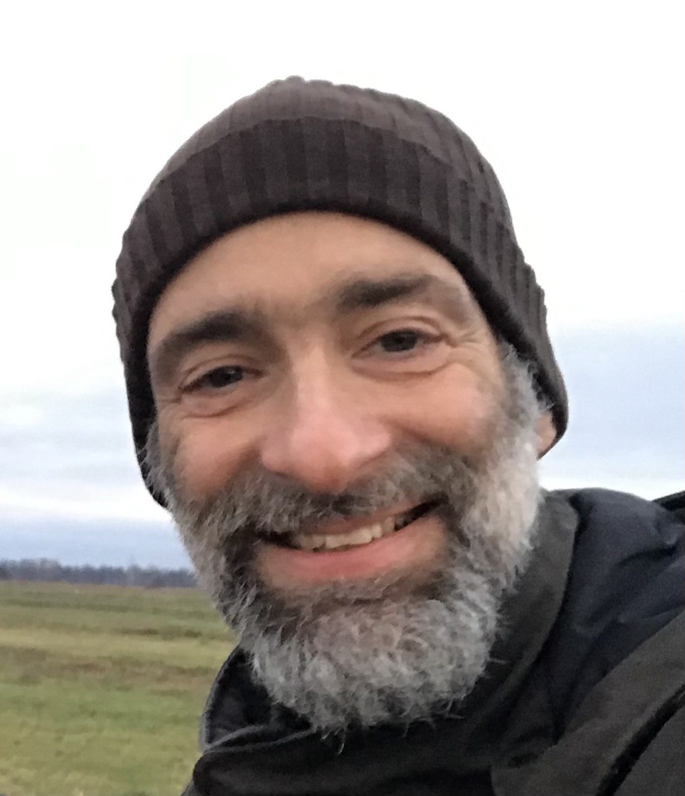
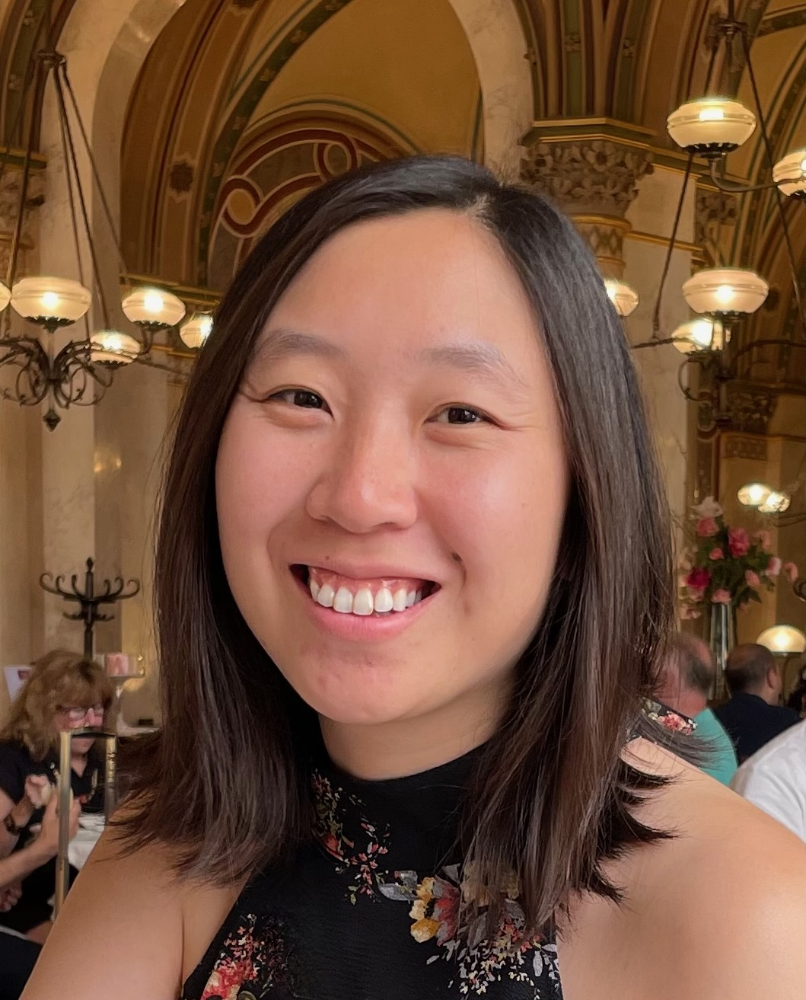
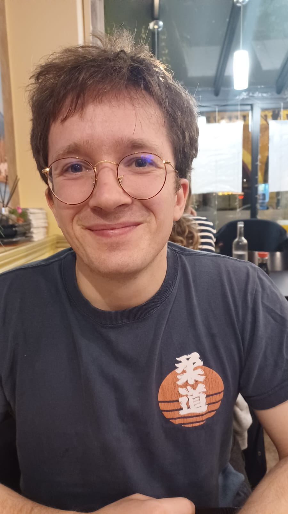
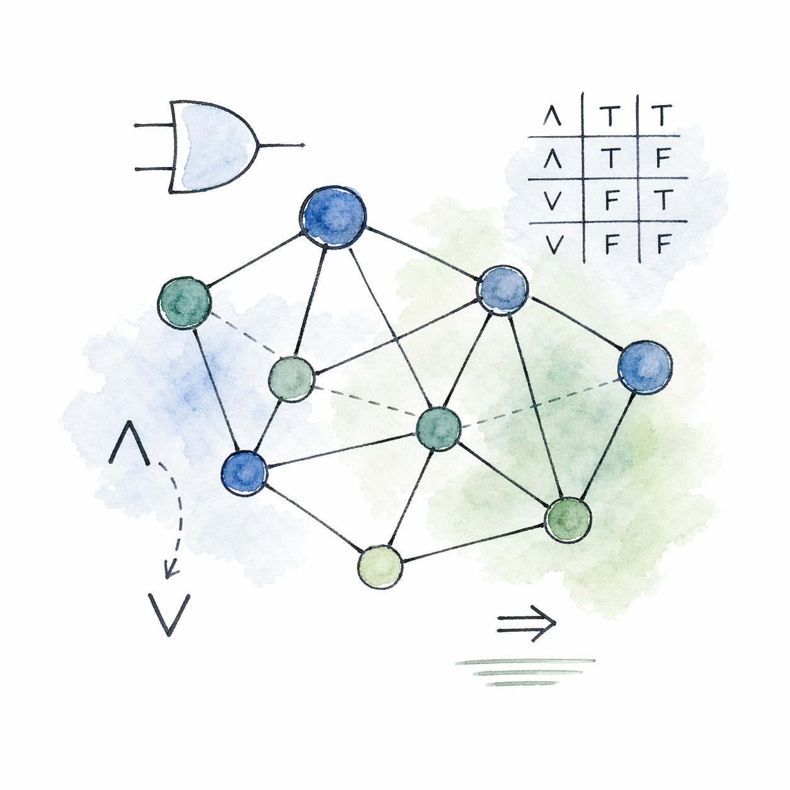
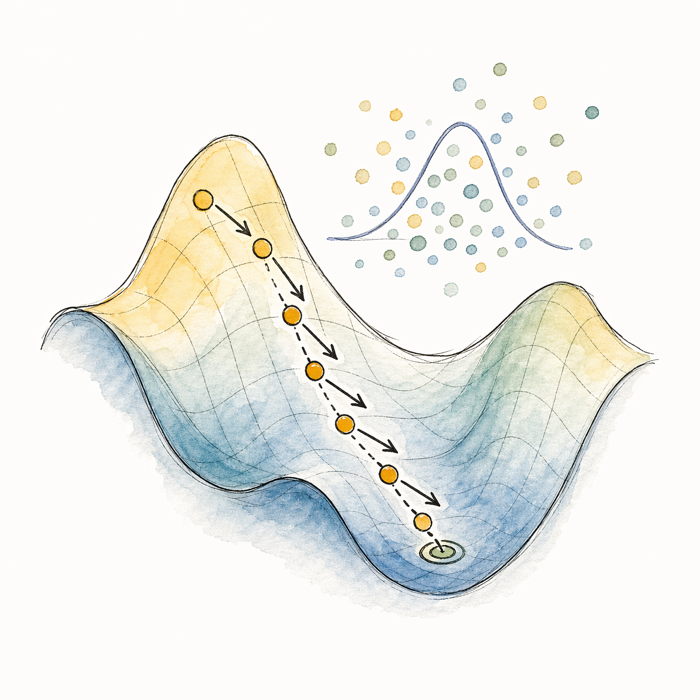

About
This is the third edition of the Liverpool Discrete Mathematics Colloquium, an annual two-day event designed to strengthen links between Computer Science and Mathematics and to expose PhD students to current research topics.
The 2026 meeting has a focused format around mathematically rigorous analysis of black-box AI algorithms. The first day is devoted to Logics and Graph Neural Networks, while the second day focuses on Stochastic Gradient Descent. Each day will feature a 2 hour tutorial together with invited talks and time for discussion and networking.
Venue
All talks will be held in the Ashton Lecture Room which is on the First floor of the Ashton Building, University of Liverpool, Brownlow Street, Liverpool, L3 3GJ
Catering
There are tea/coffee breaks provided. Lunches are not provided, however there is the University of Liverpool refectory and plenty of local cafes and restaurants nearby.
There will be a conference dinner on the evening of the first day. All participants are welcome to attend, however non-speaking participants will have to cover the cost of their own meal. Details will be provided closer to the event.
Funding for Students
We urge all students to keep receipts for expenses as we may be able to refund some expenses after the conference.
Registration
Attendance at the Liverpool Discrete Mathematics Colloquium is expected to be free of charge. Registration will be required for planning purposes, and the form and deadline will be added here once available.
Tutorial Speakers
Logical Aspects of Graph Neural Networks
Steffen Dereich
Convergence of Stochastic Gradient Descent
Speakers

Carsten Lutz
Leipzig

Emily Jin
Oxford

Benjamin Dupuis
ENS Paris
Alex Mijatović
Warwick
Sarah Sachs
Bristol
Jonni Virtema
Glasgow
Schedule

Logics and Graph Neural Networks
Tuesday 8 September 2026

Stochastic Gradient Descent
Wednesday 9 September 2026
Talk Abstracts
Tutorials
Michael Benedikt and Tony Tan - Logical Aspects of Graph Neural Networks
The last several years have seen interest in the intersection between machine learning and formal methods, specifically on the analysis of learning formalisms with formal methods. In this talk we will focus on Graph Neural Networks (GNNs) and its analysis with tools from logic. We will outline two major and complementary lines of research that leverage mathematical logic for GNN analysis.
The first line of work connects the verification of graph learning systems with satisfiability and decidability paradigms in logic. We introduce variants of first-order logic and modal logic, review how these logics can be used for static analysis of GNN and establish the boundaries of decidability and computational complexity within these frameworks.
The second line of work bridges the probabilistic analysis of graph learning with the asymptotic analysis of logic, deeply rooted in finite model theory. Instead of worst-case verification, this work focusses on the average-case and asymptotic behavior of graph learning models. We will review the classical zero-one laws and convergence laws for GNN and their implication on the expressiveness of GNN models.
In the talk we will focus on the results and intuition. We will not cover their detailed proofs.
This work is done in collaboration with Chia-Hsuan Lu, Boris Motik, Sam Adam-Day, Ismail Ilkan Ceylan, Alberto Larrauri, and Maksim Zhukovskii.
Steffen Dereich - Convergence of Stochastic Gradient Descent
Stochastic gradient descent (SGD) and its variants are the main tools for training artificial neural networks, yet even their local dynamics raise nontrivial mathematical questions. In the first part of this talk, I will recall several basic ideas from stochastic approximation: convergence estimates under contraction and Polyak–Łojasiewicz conditions, the role of the step-size sequence and Ruppert–Polyak averaging leading to central limit theorems. These results illustrate a common analytical strategy based on effective vector fields, Lyapunov estimates, local linearisation and martingale noise.
I will then discuss how these ideas can be developed further for modern optimization algorithms with memory and adaptive scaling, focusing on Adam. By viewing Adam as a delay equation with interacting fast and slow time scales, one obtains an equilibrium-averaged vector field and an associated limiting ODE. This perspective leads to local error estimates and ODE approximations. After introducing an Adam-specific martingale correction, it also yields a central limit theorem for the averaged algorithm. If time permits, I will conclude with a brief look at a new popular training algorithm named Muon and at neural-network optimization landscapes, highlighting some of the challenges posed by current training algorithms.
Invited Talks
Jonni Virtema - Unifying Approach to Uniform Expressivity of Graph Neural Networks
Many recent extensions of graph neural networks (GNNs) go beyond aggregating over immediate neighbours, instead augmenting aggregation with additional structural information from the graph, or extending it beyond the 1-hop neighbourhood (e.g., by utilising non-edges or k-hop subgraphs). In this talk, I will introduce Template GNNs (T-GNNs), a general framework that captures this trend by letting nodes aggregate over embeddings of a specified set of graph templates. I will present a matching logic, graded template modal logic GML(T), together with a generalised notion of template-based bisimulation (equivalently, the Weisfeiler-Leman algorithm), and show that this bounds the expressive power of T-GNNs. This approach allows the formulation of a general metatheorem: for any finite set of templates, GML(T) exactly captures the uniform expressivity of bounded counting T-GNNs. This metatheorem recovers known correspondences from the literature as special cases, and applies directly to recent generalisations such as k-hop subgraph GNNs.
Link to the paper: Doi:10.24963/kr.2026/96
Carsten Lutz - Graph Neural Networks, Homomorphisms and Logic
In this presentation, I will discuss recent results on deep homomorphism networks (DHNs), which extend graph neural networks (GNNs) by incorporating graph patterns and homomorphism counts. I will connect DHNs to well-studied fragments of first-order logic, particularly the unary-negation fragment, and compare the expressive power of homomorphisms and embeddings within this framework. Finally, I will argue that DHNs provide a natural formalism for learning over databases and motivate the introduction of neuro-relational programs, a novel framework that integrates declarative querying with neural computation.
Emily Jin - Homomorphism Counts Rule Everything Around Me
One of the key challenges in graph machine learning is how to effectively encode the topology of a graph into the model at hand. Standard message-passing GNNs are known to struggle with counting certain patterns (e.g., cycles), which limit their applicability to real-world tasks. Furthermore, Graph Transformers rely heavily on the quality of their positional or structural encodings to capture underlying graph structure. In this talk, we will discuss how using homomorphism counts can help address both of these shortcomings by providing a principled way of introducing structural information to increase model expressivity. Using this framework, we can increase the downstream utility of these models for problems such as molecular property prediction or drug repurposing, thereby bridging the gap between theory and practice.
Benjamin Dupuis - Generalization of Stochastic Gradient Methods: From Heavy Tails to Entropy Flows
Slides
I will discuss generalization bounds for stochastic gradient descent (SGD) and its noisy variants, with a particular focus on the role of gradient noise. After a brief overview of existing approaches, I will focus on recent works suggesting that gradient noise in SGD can exhibit heavy-tailed behaviour, motivating stochastic differential equations driven by stable Lévy processes as models of SGD. I will present high-probability generalization bounds for such heavy-tailed dynamics, based on the so-called entropy flow technique and the associated fractional Fokker–Planck equation. In the second part, I will discuss recent work extending this approach to a broad class of SGD variants that can be represented as time-homogeneous Markov chains. This provides a unified framework for deriving time-uniform generalization bounds for many variants of SGD. The theory will be supported by numerical experiments and applications to particular algorithms.
Links to the papers: ArXiv:2402.07723, ArXiv:2502.07584
Alex Mijatović - Limit Theorems for Stochastic Gradient Descent with Infinite Variance
Slides Video
Stochastic gradient descent (SGD) algorithm is a classical algorithm that gained significant popularity from both empirical and theoretical perspectives. While its probabilistic properties are well-studied when the randomness is assumed to have a finite variance, there is a scarcity of research addressing its theoretical behaviour in the case of infinite variance. In this talk, I will describe the asymptotic behavior of SGD when the stochastic gradient has an infinite variance, specifically assuming the stochastic gradient is regularly varying with index $\alpha\in(1,2)$. The most recent limit theorems in this context were established in the classical paper Karsulina (1969) in the context of one-dimensional stochastic noise belonging to a restrictive class. We extend this result into the multi-dimensional case, covering a more general class of infinite variance distributions. This extension requires entirely different techniques, as the original method does not apply to the multi-dimensional case. Our results indicate that the asymptotic distribution of the stochastic gradient descent algorithm aligns with the Ornstein-Unlenbeck process driven by an additive process with jumps (instead of a Brownian motion). Additionally, we explore the applications of these results in linear regression and logistic regression models.
This joint work with Jose Blanchet and Wenhao Yang is to appear in the Annals of Applied Probability (2026).
Sarah Sachs - Beyond i.i.d. Data: Online Optimization Between Stochastic and Adversarial Regimes
Many results in optimization and machine learning assume that data are either independent and identically distributed (i.i.d.) or completely adversarial. In practice, however, data often lie somewhere between these two extremes: they may be mostly stochastic, but exhibit temporal variation, distribution shifts, or occasional adversarial corruption. What guarantees are possible in this intermediate regime?
In this talk, I will present regret bounds for online convex optimization that adapt smoothly between stochastic i.i.d. and fully adversarial losses. The key is to exploit the smoothness of the expected loss: rather than depending on a worst-case bound on gradient magnitudes, our guarantees depend on the variance of the stochastic gradients together with a measure of adversarial variation. This phenomenon was previously understood for linear losses; we extend it to general online convex optimization. Our framework also captures departures from the i.i.d. assumption, including a limited number of adversarially corrupted rounds. At the stochastic extreme, the resulting bounds recover rates suggested by stochastic acceleration, while at the adversarial extreme they gracefully reduce to the optimal worst-case regret. Matching lower bounds show that this interpolation is tight across all intermediate regimes. The results provide a quantitative picture of how optimization guarantees degrade as data move away from the idealized i.i.d. setting.
Organisers
Supported by

This event is supported by the Heilbronn Institute for Mathematical Research, Applied Probability Trust, EPSRC, and the University of Liverpool.